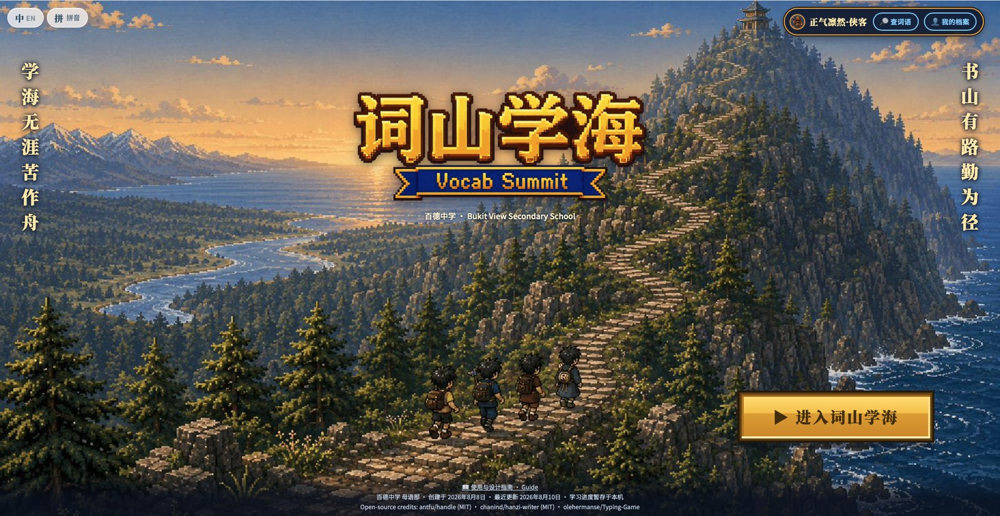
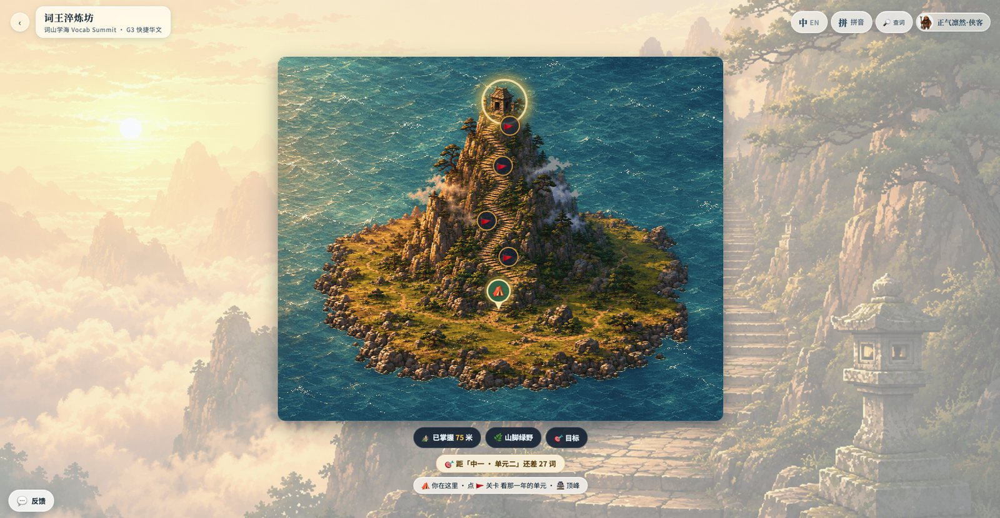
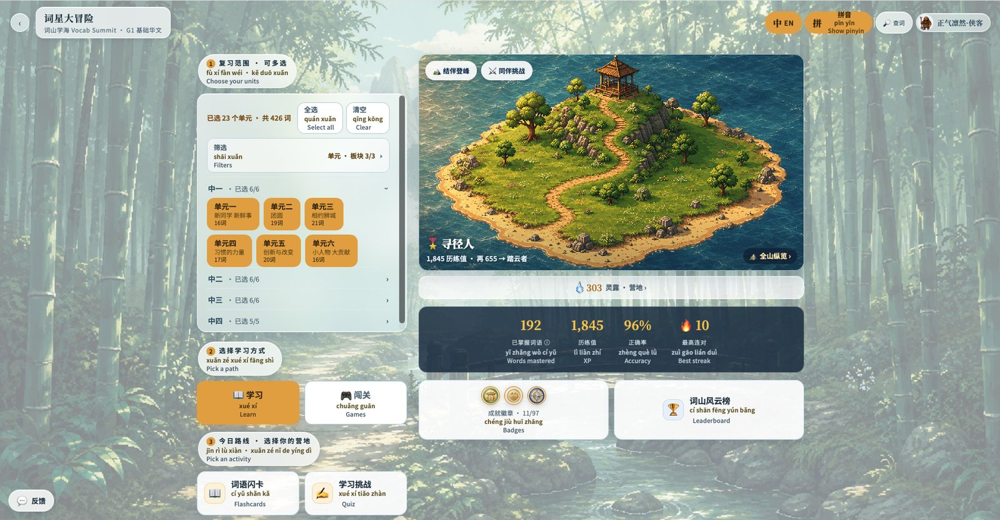

2026 AI in Sec CL NLC
Splitting heaven and earth with an AI axe
- 3,889
- 3
- 47
- 1



I want to build a powerful secondary school revision tool on SLS
(student learning space) for students to revise all CL vocab covered
over 4 years, and for it to be trackable to let them see their progress,
so that they can revisit the vocab that they have yet to master.
I don't know how to start, could you help me?
https://www.learning.moe.edu.sg/teacher-user-guide/author/html5-content-development/
-
-
我是中学华文老师，不会编码。 我已经把一个小游戏的整个资料夹和一份词语表格上传到这个 Project 里。 请帮我做三件事： 1. 读我上传的表格，把里面的词语和释义，照 my-words.js 原本的格式 重新写成一个完整的 my-words.js 给我下载。格式不要动，只换内容。 2. 把 UNIT_NAME 改成：〔你的单元名称〕 3. 把 SECONDS 改成：〔90〕 改好之后直接给我可以下载的 my-words.js，并告诉我放回哪个位置。 如果我的表格有问题（缺了释义、词语重复、少于 8 个），请先告诉我，不要自己猜。
-
我已经把这个游戏的整个资料夹上传到这个 Project 里了。 我想换掉它的外观，内容和玩法都不要动： 1. index.html 最上面的 :root 里有六个颜色。请照〔说说你要的感觉， 例如：水墨、夜市、海边、我校的校色〕，给我一整段改好的 :root 贴回去。 2. 告诉我 art 资料夹里那三张图（landscape.jpg、wall.jpg、climber.png） 分别是做什么用的、该做多大，我想自己换掉。 给我可以直接贴回去的完整段落，不要只说「把某某改成某某」。 如果我要的感觉会让字看不清楚，请先告诉我，不要照做。
-
我是中学华文老师，不会编码。 我班上遇到的问题是：〔用两三句话说清楚，先别说你要什么工具〕 我的学生是：〔中几、什么程度〕 我手上现成的材料有：〔词表？课文？考卷？录音？图片？〕 请先别动手做。先给我三个不一样的做法，每一个用三四句话说明： 学生会看到什么、要做什么、你为什么觉得这个做法对得上我的问题。 我挑好了再告诉你，那时候才开始做。 做出来的东西要能直接放上 GitHub Pages，跟我今天做的那个一样。 我不会编码。任何要我自己动手的地方，请写清楚点哪里、贴哪一段。
地上本无路，走的人多了，便成了路 The earth had no roads to begin with. When enough people walk the same way, a road appears.